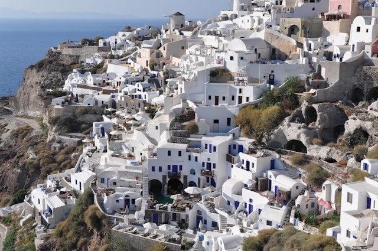
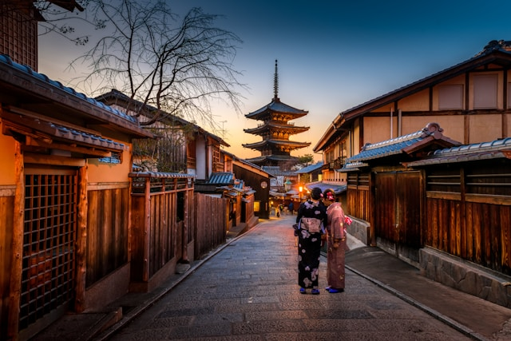

Gezi Rehberi
Anasayfa
Hakkımızda
Gezilecek Yerler
Galeri
İletişim
Machu Picchu, Peru

- Machu Picchu, Peru'nun And Dağları'nda yer alan gizemli ve etkileyici bir antik şehirdir.
UNESCO Dünya Mirası Listesi'nde yer alan bu muhteşem yer, İnka İmparatorluğu'nun kalıntılarına ev sahipliği yapar.
- Doğal güzelliklerle çevrili olan Machu Picchu, tarih ve doğa meraklıları için unutulmaz bir deneyim sunar.
Santorini, Yunanistan

- Santorini, Ege Denizi'ndeki Yunan adalarından biridir ve dünyanın en romantik ve büyüleyici yerlerinden biridir.
- Beyaz badanalı evleri, muhteşem manzarası, volkanik plajları ve nefes kesici gün batımları ile ünlüdür.
- Antik yerleşimler, renkli kumsallar ve leziz yerel mutfağıyla Santorini, tatilciler için cennetten bir köşedir.
Kyoto, Japonya

- Kyoto, Japonya'nın tarihi ve kültürel başkentidir ve binlerce yıllık tarihiyle doludur.
- Geleneksel tapınakları, zen bahçeleri, şelaleleri ve geleneksel çay evleriyle ünlüdür.
- Her mevsimde farklı güzellikler sunan Kyoto, kiraz çiçekleriyle kaplanmış baharında,
rengarenk yapraklarla süslenmiş sonbaharında ve karla örtülü kışında büyüleyici bir atmosfere sahiptir.